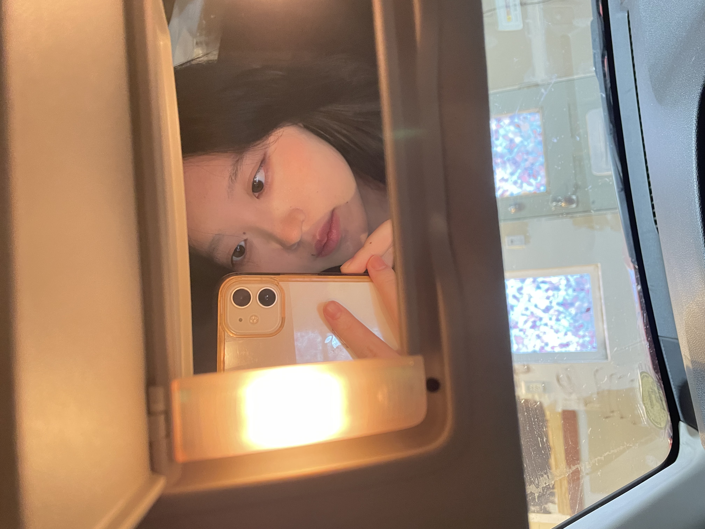

Hi, I'm Tori
she/her

My goal is to learn how to code sites properly and (hopefully) make a
pretty site by the end of the semester.
I also am fluent in Korean and know Japanese as well as Latin
(the dead language) to an extent ^-^
I like to draw and play video games in my free time :D I usually play
steam games and sometimes online multiplayer games
(I am a League of Legends addict). I also listen to a lot of
k-pop and j-indie/pop!
Here is a short list of games I play often/have played recently:
- League of Legends
- Minecraft
- Slay the Spire: Downfall
- Vampire Survivors
- Loop Hero
- The Sims 4
- Devour
And here is an abridged list of songs that are in my monthly playlist (my September playlist):
- Super Shy - NewJeans
- Air Force One - ODD EYE CIRCLE
- Sour Grapes - LE SSERAFIM
- Believing and Being - hitogoto, Ina
- Liar Dancer - マサラダ
- Hellokittybalahcurrihellokitty美味しい - babyMINT